Project archive
Built to be played.
Mobile games, application prototypes, and technical studies—each reduced to the interaction, problem, and design decisions that shaped the final build.
13 projects across games, apps, web, and WebGL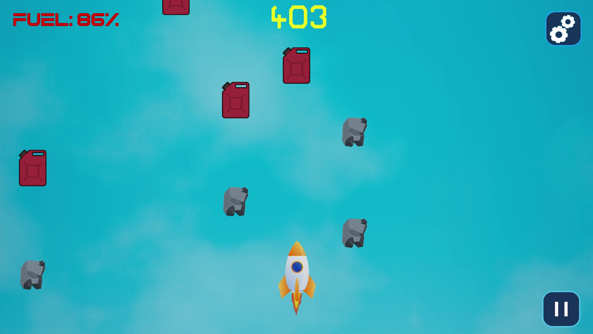
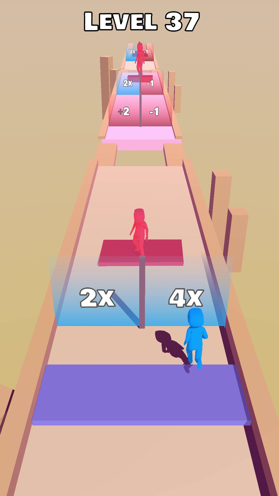
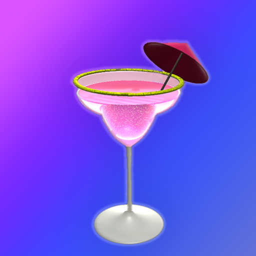
All work
Choose a build.
See how it works.
Use the filters to scan by project type, then open any card for the complete case study.
Reach to Space
Manage fuel and solve quick arithmetic questions on a rocket journey.
View case studyPush Stacks
Grow a stronger crowd by choosing the right multiplier gates.
View case studyDIY Cocktail
Mix ingredients, liquid effects, glitter, and decoration in a tactile mobile toy.
View case study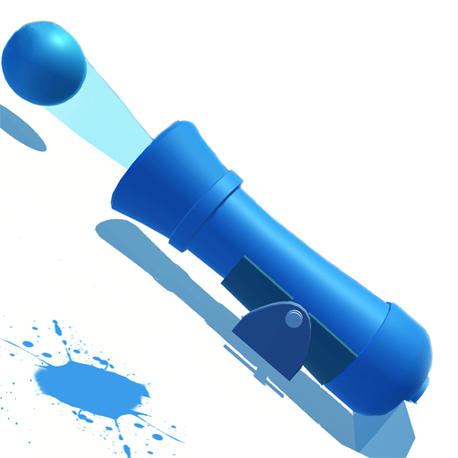
Shooting Balls
Aim for baskets and calculate the multiplier needed to clear each level.
View case study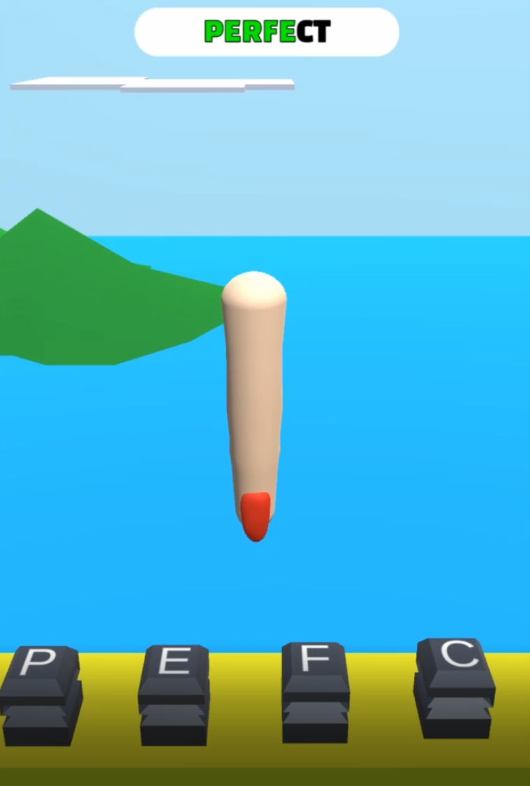
Type It 3D
Turn mechanical keyboard input into movement through a short arcade course.
View case study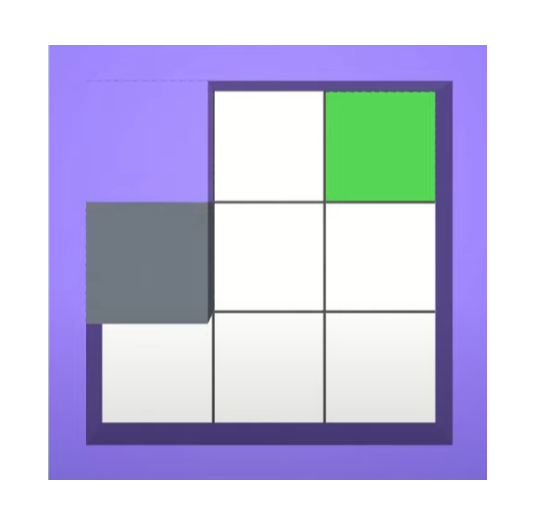
Fill In
Cover every tile without crossing a completed path.
View case study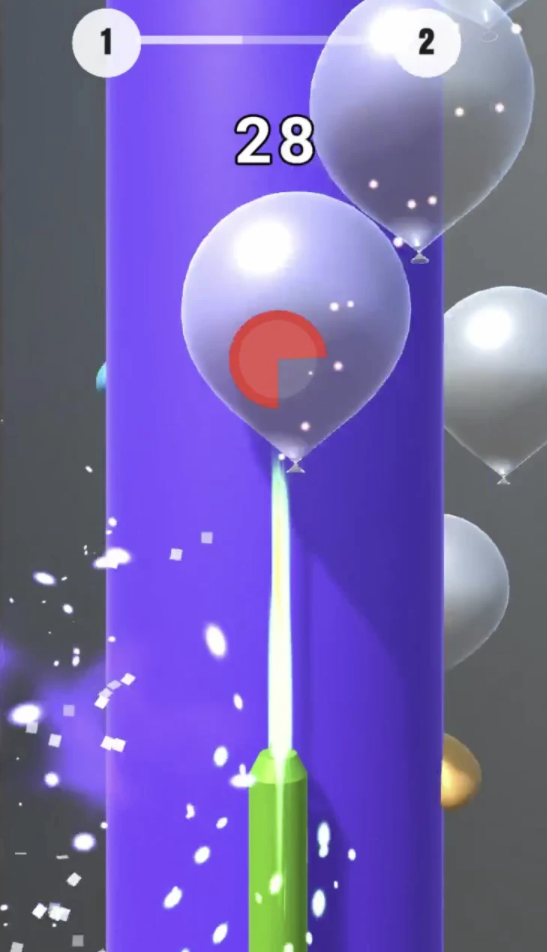
Popping Balloons
Guide a needle through hazards and line up satisfying chains of pops.
View case studyEmoji Puzzle
Decode familiar expressions using compact emoji clues and a letter bank.
View case study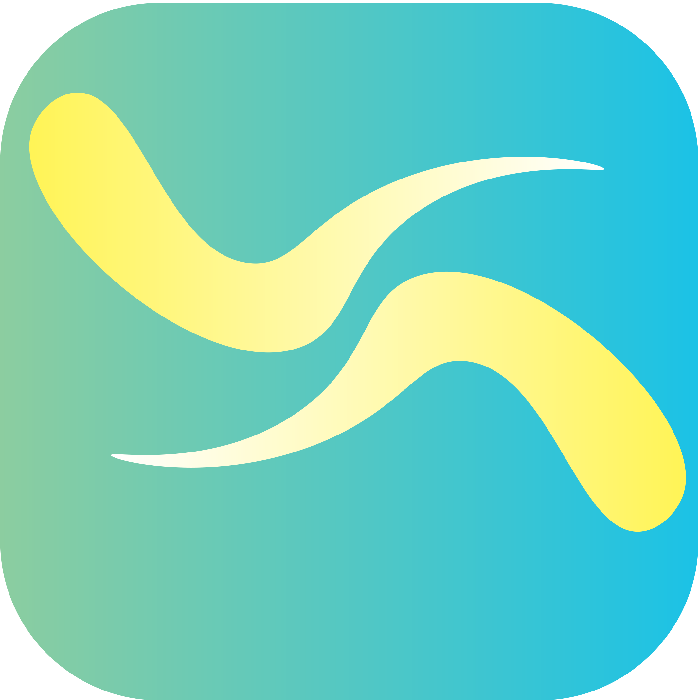
Union App
A collaborative social application concept for discussions, events, and messages.
View case study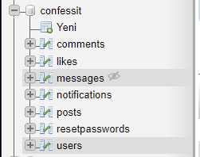
Confess It
A full-stack social prototype with posts, profiles, messaging, and notifications.
View case study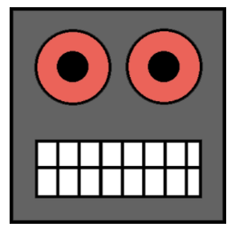
Mr. Robot Chat Game
An early Android experiment in branching replies and conversational interaction.
View case study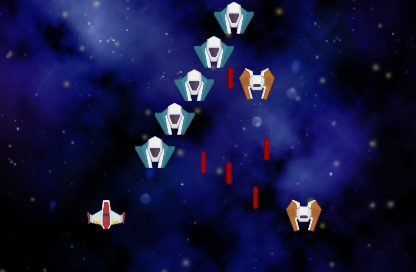
Laser Defender
A classic shooter study covering waves, projectiles, scoring, and feedback.
View case study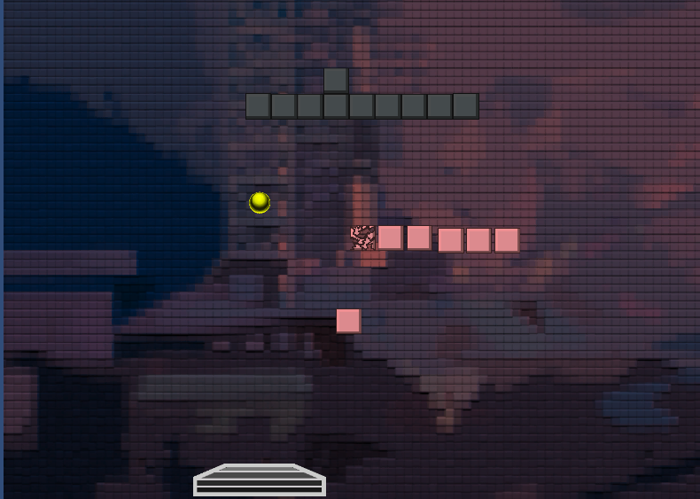
Block Breaker
A focused brick-breaker exercise in physics, levels, sound, and game state.
View case studyPlayable in the browser
Three experiments need no install.
Draw with WebGL, animate an articulated figure, or explore a live shader study.